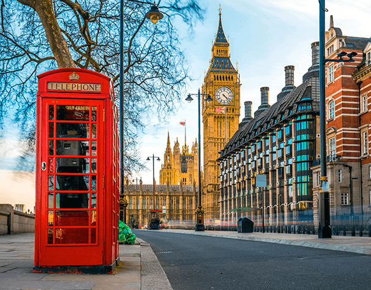

Londres é a capital da Inglaterra atualmente, é um dos centros econômicos do mundo sendo uma das cidades mais influentes do planeta. E aqui vamos trazer algumas características dessa cidade, que é a terra natal da família bridgerton. Uma Londres totalmente diferente de outros tempos em que se passa a história de Julia Quinn. Uma vez que são 200 anos para a história ao tempo atual. O que não faz Londres deixar de ser uma cidade incrivelmente moderna e contemporânea.

A história dos Bridgertons se passa no primeiro e segundo quarto do século XIX, junto com a transição da cidade londrina da era moderna para era contemporânea. Nessa época as classes sociais detinham sua influência no âmbito social, as famílias mais favorecidas detinham de maior poder e respeito diante da sociedade. Desse modo estavam entre os mais reconhecidos aqueles que tinham algum título próximo da monarquia, como por exemplo na história de Quinn, os bridgertons eram de uma família de viscondes. Assim tinham o respeito das classe sociais com títulos abaixo, assim como deveria ser respeitosos com as hierarquias acima.
Alguns dos acontecimentos que podemos ver nas histórias que se passam nos livros da série, são eventos sociais e convenções importantes que as pessoas da época participavam. Os momentos em que mais podemos nos lembrar dos livros são os famosos bailes, onde as jovens debutantes são levadas por suas mães para poderem se apesentar aos rapazes dispostos a se casar. Também podemos ver a presença dos clubes e bares para os homens solteiros e casados que participavam para tomar seus drinks e poderem conversar descontraidamente. Assim como os passeios nos parques da cidade em volta dos lagos. São eventos e acontecimentos que se passava em Londres no século XIX, que Julia Quiin fez presente em seus livros, dando assim preciosidade a suas narrativas.